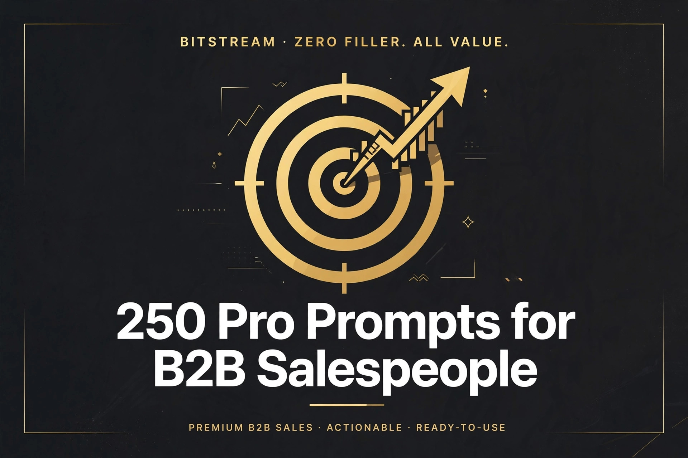

BITSTREAM · ZERO FILLER. ALL VALUE.
250 Pro Prompts
for B2B Salespeople
250 copy-paste AI prompts for reps, SDRs & AEs.
Open a free AI tool, paste, fill in the blanks, done.
PRO PACK · $14.99
How to use this pack (60 seconds)
- Open a free AI tool — ChatGPT (chatgpt.com), Claude (claude.ai), or Gemini (gemini.google.com). No account tricks, no paid plan needed.
- Copy any prompt and replace the [BRACKETED] parts with your deal details.
- Be specific. Your prospect's industry, their pain, your product's edge — specifics in, quality out. "Write a cold email" gets a generic list. "Write a 120-word cold email to a VP of Ops at a 200-person logistics company losing money on late shipments" gets a winner.
- Treat the first answer as a draft. Reply with "make it shorter," "more direct," or "add a stronger close" until it fits your voice.
- Sanitize before you paste. Never feed private customer data, contract terms, or pricing into a public AI tool — use placeholders or your company's approved AI.
Rule 1 — Describe, don't write. You don't need to be a copywriter. Describe the prospect, the pain, and what you want them to do — the AI does the writing.
Rule 2 — You are the closer, AI is the assistant. Every prompt output gets your eyes before it goes out. AI drafts, you edit, you own the message.
Rule 3 — One workflow at a time. Don't overhaul your whole sales process today. Pick one: your prospecting, your discovery calls, or your follow-ups — and start there.
1 · Prospect Research & ICP Targeting
Know your buyer before you say a word — research briefs, account maps, and trigger-based targeting.
PROMPT 001
One-page prospect company brief
Write a one-page prospect brief on [company name] in the [industry] industry. Cover: what they sell, approximate size, who their customers are, recent news or funding, and 3 likely business pains they have. Then list 3 reasons they'd need a [your product category].
PROMPT 002
ICP definition workshop
Help me define my Ideal Customer Profile. I sell [your product] to [target role, e.g. VPs of Operations]. Based on my 5 best customers — [list them or describe them] — identify the common traits: company size, industry, tech stack, and trigger events. Output a one-paragraph ICP I can hand to my SDRs.
PROMPT 003
Buying committee map
Map the likely buying committee at a [company size] [industry] company evaluating [your product category]. For each role — champion, economic buyer, technical evaluator, end user — list their title, what they care about, their likely objections, and how to win them over.
PROMPT 004
Prospect pain hypothesis builder
Generate 5 specific pain hypotheses for [job title] at [industry] companies with [employee count]. For each pain, explain WHY they'd have it (industry dynamics, role pressures) and what observable signal would confirm it. Make them specific enough to mention in a cold email.
PROMPT 005
Trigger event monitor
List 10 trigger events I should watch for that signal a [industry] company is about to buy [your product category]. Include: the event, why it creates urgency, and where I can spot it publicly (job boards, LinkedIn, news). Format as a tracking checklist.
PROMPT 006
Competitor displacement research
I sell [your product] against [competitor]. Research the top 5 complaints users have about [competitor] (pricing, support, features, contracts). For each complaint, give me one respectful question I can ask a prospect currently using them.
PROMPT 007
Industry trends for cold outreach
Summarize the 5 biggest trends hitting the [industry] industry in 2026. For each trend, give me one line I can drop into a cold email to show I understand their world, and one question that sparks a conversation about it.
PROMPT 008
Account-based prospecting plan
Build a 30-day prospecting plan for this target account: [company name]. Include which [4-5 contacts] to reach, in what order, through which channels, and what personalized angle to use with each person based on their role.
PROMPT 009
Lead scoring rubric
Create a lead-scoring rubric for my pipeline. My ICP: [describe]. Score leads 1–100 based on fit (company size, industry, role) and behavior [list behaviors: website visit, pricing page, email reply...]. Define what score counts as sales-qualified.
PROMPT 010
Pre-call research checklist
Give me a 10-minute pre-call research checklist for a first discovery call with [contact name, title] at [company]. List exactly what to look up (LinkedIn, company news, tech stack) and 3 personalized conversation openers based on typical findings.
PROMPT 011
Lookalike account list builder
My best customers are: [list 3-5 companies and what they have in common]. Generate a list of 25 lookalike companies in the [industry/region] space that fit the same profile, with one line on each explaining why they're a match.
PROMPT 012
Prospect LinkedIn profile decoder
I found this prospect's LinkedIn profile summary: [paste it]. Decode it: what do they actually care about, what language should I mirror, and what 3 personalized angles can I use in outreach? Avoid generic flattery — find real hooks.
PROMPT 013
Seasonal prospecting calendar
Build a 12-month prospecting calendar for selling [your product] to [industry] buyers. Note when their budgets open, when they're busiest (avoid), and the best seasonal angle for outreach each quarter.
PROMPT 014
Referral mapping
Here's my customer list: [list customers]. For each one, suggest 3 warm-intro paths — people they likely know, partner companies, or alumni networks I could leverage for referrals into [target industry]. Draft the ask message for the best path.
PROMPT 015
Tech stack inference
This prospect's job postings mention [tools/technologies listed in job ads]. Infer what their current tech stack likely looks like, where [your product category] fits or conflicts, and 3 discovery questions about their stack.
PROMPT 016
Prospect prioritization matrix
Here are 20 accounts in my territory: [paste list]. Rank them by likelihood to buy in the next 90 days based on: fit to my ICP [describe ICP], visible trigger events, and accessibility. Put them in A/B/C tiers with a one-line reason each.
PROMPT 017
Executive briefing doc
Write a 1-page executive briefing I can bring to a meeting with the [CEO/CFO] of [company]. Cover their strategic priorities, how [your product] maps to business outcomes they care about (revenue, cost, risk), and 3 questions that make me sound like a consultant, not a vendor.
PROMPT 018
Market sizing for my territory
Estimate the number of target accounts in my territory: [region], companies in [industries] with [size range]. Break it down by segment, estimate how many I can realistically work per quarter, and show the math behind the number.
PROMPT 019
New logo win-loss analysis
Here are my closed-won and closed-lost deals this quarter: [paste deal list with outcomes]. Find the patterns: which industries, deal sizes, and champion titles won? Where did I consistently lose, and what's the one fix I should make this quarter?
PROMPT 020
Personalized outreach angle generator
Generate 10 personalized opening angles for cold outreach to [name, title] at [company]. Base them on: their role's daily reality, [a recent company event], and [their industry's 2026 trend]. No "I loved your LinkedIn post" fluff — real, usable hooks.
PROMPT 021
Champion identification
I'm multi-threading this deal: [company]. Based on these contacts I've found — [list names/titles] — tell me who's most likely to be my champion, who might block me, and what to say to each person to move the deal forward.
PROMPT 022
Vertical expansion research
I sell well in [industry A]. Research [industry B] as an expansion vertical: what overlaps, what's different about their buying process, who the decision-makers are, and the 3 messaging tweaks I'd need to land there.
PROMPT 023
Prospect company org chart guess
Build a probable org chart for the [department, e.g. revenue operations] function at a [size] [industry] company. Show likely titles, who reports to whom, and who influences a [your product category] purchase. Tell me where I should enter first and why.
PROMPT 024
Trigger-based outreach draft
Write a short outreach email triggered by this event: [event: new VP hire / funding round / office expansion / compliance change] at [company]. Connect the event to [a specific pain] in 2 sentences, then one low-pressure CTA. Under 100 words.
PROMPT 025
Territory account research sprint
I have 3 hours to research [10 target accounts: list them]. Give me a sprint plan: how many minutes per account, the 5 data points to capture on each, and a template row I can paste into a spreadsheet. Focus on data that powers personalized outreach.
2 · Cold Email & Sequences
Emails that get opened and answered — subject lines, sequences, and reply rescue.
PROMPT 026
Cold email draft — pain-led
Write a 5-sentence cold email to [title] at [company]. Sentence 1: a specific observation about [their situation]. Sentence 2: the pain it causes. Sentence 3: how [your product] solves it in one line. Sentence 4: social proof [customer + result]. Sentence 5: a soft CTA. Under 120 words.
PROMPT 027
Subject line batch
Write 15 cold email subject lines for [persona] in [industry]. Mix: curiosity, pain-point, social proof, question, and ultra-short (2-3 words). No clickbait, no spam words. Rank them by predicted open rate and explain the top 3.
PROMPT 028
7-touch email sequence
Build a 7-touch outbound email sequence over 21 days for [persona] selling [your product]. Each touch needs: subject, angle (new each time), and CTA. Vary the approach — email 1 value, email 2 social proof, email 3 question, and a breakup email at the end. Under 100 words per email.
PROMPT 029
Breakup email that re-engages
Write 3 breakup emails to a prospect who's gone quiet after [touchpoint: discovery call / proposal / demo]. Tone: gracious, lightly humorous, zero guilt. Each should make it EASY to say yes again. Pick your favorite and explain why it works.
PROMPT 030
Email A/B test planner
Here's my current cold email: [paste it]. Give me 3 A/B test variants — each changing ONE element (subject line, CTA, opening line). For each test, state the hypothesis and what result would tell me to keep it. Keep my voice.
PROMPT 031
Social proof email
Write a cold email built around this customer story: [customer type] reduced [metric] by [X%] with [your product]]. Target: [persona] at a similar company. Make the parallel obvious, keep the story under 3 lines, and end with "worth a 15-minute look?"
PROMPT 032
Short & punchy follow-up
Write a 3-sentence follow-up email to a prospect who opened my email [3 times] but never replied. No "just bumping this" — give them a NEW reason to reply, based on [a fresh angle or recent company news]. Under 60 words.
PROMPT 033
Gatekeeper bypass email
I need to reach [executive name/title] but [assistant name] screens their inbox. Write a short, respectful email to the gatekeeper that earns a forward: what this is about, why it matters to their boss, and what's in it for the gatekeeper to pass it along.
PROMPT 034
Value-first nurture email
Write a nurture email to a prospect who said "not now" 3 months ago. Include a genuinely useful resource about [their industry challenge], no pitch, one line connecting it to what we discussed, and a soft re-open question. Teach, don't sell.
PROMPT 035
Referral request email
Write an email to my happy customer [name] at [company] asking for a referral to [target company or persona]. Make it easy: suggest the exact intro text they can forward, keep it to 5 sentences, and offer to return the favor.
PROMPT 036
Email deliverability audit
Audit this cold email for spam risk: [paste email]. Flag: spam-trigger words, too many links, image-to-text issues, misleading subject lines, and missing unsubscribe. Rewrite the flagged parts to keep the message but improve inboxing.
PROMPT 037
Event-trigger outreach email
Write an outreach email tied to this event: [their product launch / our webinar / conference we both attend]. Make the connection natural, not forced. Include one detail that proves I know about the event. Under 90 words with a specific CTA.
PROMPT 038
Multi-threading intro email
I'm already talking to [champion name/title] at [company]. Write an email to loop in [second contact name/title] — referencing the champion by name, explaining why I'm including them, and giving them a reason to engage that's about THEIR role, not mine.
PROMPT 039
Personalized first-line generator
Generate 10 personalized email first lines for [name/title/company]. Use: [2-3 research facts: recent news, LinkedIn post, job change]. Each line should feel human-written and connect to [a pain my product solves]. No compliments that could apply to anyone.
PROMPT 040
Reply-rate rescue plan
My reply rate dropped from [X%] to [Y%] over the last [time period]. Here's my current sequence: [paste it]. Diagnose: what likely changed, what's tired, and give me a revised 5-touch sequence with fresh angles.
PROMPT 041
Enterprise cold email (long-cycle)
Write a cold email for an enterprise buyer: [title] at a [5,000+ employee] company. They buy committees, not tools — so lead with business outcomes ([revenue/cost/risk]), cite a peer company in their industry, and suggest a discovery call framed as a benchmarking conversation.
PROMPT 042
SMB speed email
Write a cold email for a busy SMB owner at a [20-person] [industry] company. They have no time and hate jargon. Lead with the money or time saved, make the CTA a single click to book, and keep the whole thing under 80 words.
PROMPT 043
Re-engagement for old leads
Write an email to a lead from [6+ months ago] who went dark. Reference what's changed since: [new product feature / new case study / market shift]. Make it feel like a genuine check-in, not a mass blast. One clear, easy CTA.
PROMPT 044
Post-webinar follow-up email
Write a follow-up email to someone who attended our webinar on [topic] but didn't take a meeting. Reference one specific point from the webinar, tie it to their role as [title], and offer a 15-minute working session on it — not a sales demo.
PROMPT 045
Champion enablement email
Write an email my champion [name/title] can forward to their [CFO/boss] to sell [your product] internally. It should: summarize the business case in 5 bullets, address cost vs. ROI, and anticipate the [top 2 objections]. Write it in their voice, not mine.
PROMPT 046
Seasonal email campaign
Build a 3-email seasonal campaign for [end of quarter / budget season / holiday slowdown] targeting [persona]. Each email ties the season to a buying reason: urgency, budget timing, or planning. No discounts — use timing and relevance.
PROMPT 047
Objection pre-empt email
I know prospects always ask about [common objection: price / implementation time / security]. Write a proactive email that addresses it BEFORE they raise it — reframed as a strength. Target [persona], conversational tone, proof included.
PROMPT 048
Warm intro follow-up
Someone warm-intro'd me to [name/title/company]. Write the first email after the intro: thank the connector, reference the intro context, and suggest a specific low-friction next step. Keep it warm and short — the trust is already there.
PROMPT 049
Competitor switch email
Write an email to a prospect using [competitor] who's showing frustration signals: [describe signal]. Position switching as low-risk: migration support, proven results from switchers, and a comparison they'll want to see. Confident but never trash-talking.
PROMPT 050
Email sequence performance analyzer
Here are my sequence stats: [open %, reply %, positive reply %, meetings booked, by touch]. Analyze: which touch does the heavy lifting, where do I lose people, and what 2 changes would most improve booked meetings? Show the math.
3 · Cold Calling
Openers, scripts, voicemails, and gatekeeper plays that turn dials into conversations.
PROMPT 051
Cold call opener scripts
Write 5 cold-call openers (first 20 seconds) for calling [title] at [industry] companies. Mix styles: permission-based, pattern-interrupt, pain-point, referral, and research-led. Each must survive the "why are you calling" reflex and earn 30 more seconds.
PROMPT 052
Full cold call script
Write a complete cold call script for selling [your product] to [persona]. Include: opener, 3 discovery questions, a bridge to value, and a meeting close. Add branch responses for "not interested," "send me an email," and "we're happy with what we have."
PROMPT 053
Voicemail that gets callbacks
Write 3 voicemail scripts under 25 seconds each for [persona]. Each should: name-drop a result for a peer company, create a small curiosity gap, and give one easy way to reach me. No "I'll keep calling until you answer" energy.
PROMPT 054
Gatekeeper navigation script
Write a gatekeeper script for reaching [title] at a mid-size company. Include: what to say to the receptionist, how to sound like an expected caller, what to say when asked "what's this about," and how to leave info that actually gets passed along.
PROMPT 055
Objection-on-the-fly playbook
Give me one-paragraph rebuttals for these call objections: [not interested / no budget / already have a vendor / call me in 6 months / I'm not the right person]. Each: validate, reframe, ask a question. Selling [your product] to [persona].
PROMPT 056
Call block battle plan
Build my daily call block plan: [2 hours], target [persona] in [industry]. Include: how many dials, list order (best first), what to say in the first block vs. the last, and 3 mindset cues for when energy dips. Designed for SDRs, not robots.
PROMPT 057
Follow-up call after no-show
Write a script for calling a prospect who no-showed our meeting. Tone: zero guilt, genuinely helpful. Give me what to say live, and a separate voicemail + email combo that gets them rebooked. The goal is a new time, not an apology.
PROMPT 058
Referral call script
Write a script for calling [new contact] after my customer [name] gave me their name. Cover: how to name-drop naturally, why I'm calling in one line, and 2 qualifying questions before asking for a meeting. Warm but professional.
PROMPT 059
Call review & self-coaching
Here's the transcript of my cold call: [paste transcript]. Score it on: opener, questioning, listening, value delivery, and close. Give me the 3 biggest fixes and one rewritten version of my weakest moment.
PROMPT 060
Permission-based opener builder
Write 5 permission-based openers for [persona] that ask for 30 seconds without sounding weak. Vary the hook each time: industry stat, peer result, honest directness, question-first, and trigger-event. Keep each under 15 words spoken.
PROMPT 061
Call-to-email bridge
Write a script for the call when a prospect says "send me an email." Cover: what to say to keep the conversation alive first, 2 qualifying questions to earn before hanging up, and what the follow-up email should contain so it actually gets a reply.
PROMPT 062
Connect-rate booster
My connect rate is [X%] on [dial volume] daily dials. Diagnose likely causes for a rep selling [your product] to [persona]: list quality, time-of-day, dial count, voicemail habits. Give me a 2-week plan to lift it with specific numbers to hit.
PROMPT 063
Warm-call script (inbound follow-up)
Write a script for calling an inbound lead who [downloaded a whitepaper / attended a webinar / visited pricing]. Include: the opener that references their action, 3 qualifying questions, and how to book the meeting on the spot. Warm tone — they raised their hand.
PROMPT 064
Executive-level call opener
Write openers for calling a [VP/C-level] executive at a [large company]. They have 30 seconds of patience: lead with a business outcome, drop one peer-company proof point, and ask a question only an executive would have an opinion on.
PROMPT 065
Competitor displacement call script
Write a call script for a prospect using [competitor] whose contract renews in [timeframe]. Include: discovery questions about their current experience, 3 gentle wedge questions that surface gaps, and how to position a no-risk evaluation. Never bash the competitor.
PROMPT 066
Voicemail + email one-two punch
Write a coordinated voicemail + email combo for [persona] at [company]. The voicemail teases, the email delivers the proof. They should reference each other, land within the same hour, and share one consistent hook about [their pain].
PROMPT 067
Call block energy resets
Give me 8 two-minute energy resets for between call blocks when I'm getting rejected hard. Include: one mindset reframe, one physical reset, one script tweak to try, and one reminder of why this works. Written for a real human SDR, not a productivity poster.
PROMPT 068
Second-chance call script
Write a script for calling back a prospect I burned months ago with a bad pitch. Cover: how to acknowledge it with humor, what's new since [new feature / new proof point], and why this conversation will be different. Honest and disarming.
PROMPT 069
Conference follow-up call script
Write a call script for following up with someone I met at [conference name]. Include: the opener that references where we met, one thing to recall from the conversation ([note you took]), and how to turn the warm chat into a booked discovery call.
PROMPT 070
Local-presence opener variants
Write 5 openers tailored for calling prospects in [city/region]. Reference local business realities: [local industry, local events, regional pain points]. Make me sound like a neighbor who happens to solve [their problem], not a dialer.
PROMPT 071
Call disqualification questions
Write 8 polite disqualification questions for a 3-minute qualifying call about [your product]. I need to find out fast: budget authority, timeline, current solution, and deal-breakers — without interrogating. Order them from least to most direct.
PROMPT 072
Phone tag breaker
I've called [name] 6 times with no connect. Write a pattern-break strategy: a different-day/time plan, a voicemail that stands out, and an email that references the attempts with humor. One last creative push before I park the lead.
PROMPT 073
Post-meeting confirmation call
Write a 2-minute script for calling to confirm tomorrow's meeting with [name/title]. Include: confirming the agenda, asking them to bring [who/what], and a subtle commitment question that reduces no-shows. Warm, quick, professional.
PROMPT 074
Cold call value prop in 30 seconds
Turn this product description into a 30-second spoken value prop for [persona]: [paste description]. Cut all jargon, lead with the outcome they care about, and end with a question that opens a conversation instead of a pitch.
PROMPT 075
Dial-to-meeting conversion plan
I'm booking [X] meetings from [Y] dials — I want to double it. Audit my funnel: connect rate, conversation rate, meeting rate. Give me the 3 highest-leverage fixes for a rep selling [your product] to [persona], with target numbers.
4 · LinkedIn & Social Selling
Warm up the inbox with social touches — connection requests, DMs, and content that sells.
PROMPT 076
Connection request messages
Write 10 LinkedIn connection request notes (under 300 characters each) for [persona] in [industry]. Vary the angle: shared interest, their content, mutual connection, industry observation, and honest directness. No pitching in the request.
PROMPT 077
LinkedIn DM sequence
Write a 4-message LinkedIn DM sequence for [persona] who accepted my connection. Message 1: thank + one observation. Message 2: a useful insight for their role. Message 3: a soft question. Message 4: the ask. Space them over 2 weeks. Conversational, never salesy.
PROMPT 078
Profile rewrite for sellers
Rewrite my LinkedIn headline and About section for a [SDR/AE] selling [your product] to [persona]. Make prospects want to talk to me: lead with how I help, add proof, and end with a clear CTA. Here's my current text: [paste it].
PROMPT 079
Comment-to-conversation playbook
Build a commenting playbook for warming up [10 target accounts] on LinkedIn. Include: what kinds of posts to engage with, 5 comment templates that add real value (not "great post!"), and when to move from comments to a DM.
PROMPT 080
Thought leadership post ideas
Give me 10 LinkedIn post ideas for a salesperson selling [your product] to [industry]. Mix: contrarian takes, customer lessons, industry observations, and behind-the-scenes sales life. Each with a hook line. Goal: inbound conversations, not likes.
PROMPT 081
Voice note DM script
Write 3 LinkedIn voice-note scripts (under 40 seconds spoken) for [persona] at [company]. Each: one personalized line, one peer result, one easy question. Written for spoken delivery — contractions, pauses, and zero corporate speak.
PROMPT 082
LinkedIn outreach audit
Audit my LinkedIn outreach: [paste my connection note + follow-up messages]. Score: personalization, value, tone, CTA strength. Tell me what's killing my reply rate and rewrite the whole sequence keeping my voice.
PROMPT 083
Warm intro request DM
Write a LinkedIn DM to [mutual connection] asking for a warm intro to [target name/title]. Explain why it's a good fit in 2 lines, make the ask tiny, and give them a copy-paste intro they can send. Grateful, not grabby.
PROMPT 084
Job-change alert outreach
Write outreach for a champion who just changed jobs: [name] moved from [old company] to [new company] as [title]. Include: a congrats message, a reason to bring [your product] to the new role, and a low-pressure re-connect ask.
PROMPT 085
LinkedIn poll for engagement
Write 5 LinkedIn poll questions for my network of [persona] buyers. Each poll should surface a pain my product solves, spark debate in the comments, and give me follow-up DM material. Include 4 answer options each.
PROMPT 086
Content-to-DM bridge
I posted about [topic] and [name/title] engaged with it. Write the DM that turns their like/comment into a conversation: reference what they engaged with, ask their take, and bridge to [my product's value] without pitching.
PROMPT 087
Social selling daily routine
Build a 30-minute daily LinkedIn routine for an AE selling [your product]. Break it into: prospecting (who to find), engaging (who to comment on), and posting (what to share). Designed to create [3] real conversations a week.
PROMPT 088
Case study LinkedIn post
Turn this customer win into a LinkedIn post: [customer type] achieved [result] with [your product]]. Format: hook, the before, the after, one lesson. Under 150 words. End with a question that starts conversations with [persona].
PROMPT 089
LinkedIn event outreach
Write outreach for people attending [LinkedIn event / industry webinar]. Before the event: a "see you there" note. After: a follow-up referencing [a session topic] and bridging to a discovery conversation. Both under 100 words.
PROMPT 090
Multi-stakeholder DM campaign
I'm working [company] with [4 contacts: names/titles]. Write a tailored first DM for each person — same deal, different angle per role. Show me how the messages work together to create internal conversation about [the problem].
PROMPT 091
LinkedIn recommendation request
Write a request to my customer [name] for a LinkedIn recommendation about [specific result]. Make it easy: remind them of the outcome, suggest 2-3 sentences they could write, and keep it to 4 lines. Warm and appreciative.
PROMPT 092
Competitor's customer outreach
Write a LinkedIn DM to someone at a company using [competitor]. Don't attack — instead, reference [a known limitation of the competitor] as a question: "curious how you handle X?" Make switching feel like an upgrade, not a betrayal.
PROMPT 093
DM re-engagement after silence
Write a re-engagement DM for a LinkedIn conversation that died [3 weeks ago] after [their last message / my pitch]. Give me 3 versions: the value-add, the honest check-in, and the pattern-interrupt. Each under 50 words.
PROMPT 094
LinkedIn Live / audio event invite
Write an invite for [persona] prospects to my LinkedIn event on [topic]. Lead with what they'll learn (not who's speaking), make it feel exclusive, and give a one-click RSVP path. Then write the thank-you DM for attendees.
PROMPT 095
Social proof DM
Write a DM built around this proof point: [peer company + specific result]. Target: [title] at a similar-sized [industry] company. Make the parallel unmistakable, keep it casual, and end with a question they'd actually answer.
PROMPT 096
Founder-led outreach template
Write a LinkedIn message FROM my founder/CEO to [executive title] at [target company]. Tone: peer-to-peer, brief, with one insight about [their industry] and an offer of a 15-minute peer conversation. Under 80 words.
PROMPT 097
LinkedIn SSI improvement plan
My LinkedIn Social Selling Index is [score] with weak spots in [areas]. Build a 30-day plan to raise it: specific daily actions per pillar, what to post, who to engage, and how to track improvement. Goal: [target score].
PROMPT 098
Post-webinar attendee outreach
Write LinkedIn DMs for webinar attendees who didn't book: [webinar topic]. Segment: the engaged (asked questions), the lurkers (just watched), and the no-shows (registered only). One message each, tailored to their behavior.
PROMPT 099
LinkedIn + email + call cadence
Design a 14-day multichannel cadence for [persona]: which days get LinkedIn touches vs. email vs. calls, what each touch says, and how they build on each other. Total [10] touches. Show me the day-by-day plan with the message angle for each.
PROMPT 100
Social selling metrics review
Here are my LinkedIn numbers: [connection acceptance %, DM reply %, profile views, meetings from social]. Diagnose what's working and what's broken for a rep selling [your product]. Give me 3 fixes prioritized by impact on meetings booked.
5 · Discovery & Qualification
Ask better questions, hear the real pain — discovery frameworks, MEDDIC-style qualifiers, and call prep.
PROMPT 101
Discovery question bank
Generate 30 discovery questions for a first call with [title] at a [size] [industry] company about [problem area]. Split into: situation (10), problem (10), and implication/payoff (10). Order them so the conversation flows naturally.
PROMPT 102
MEDDIC qualification scorecard
Build a MEDDIC scorecard for this deal: [company, contact, stage]. Score Metrics, Economic Buyer, Decision Criteria, Decision Process, Paper Process, Identify Pain, and Champion 1–5 each. Flag the weakest areas and tell me exactly what to find out next.
PROMPT 103
Pain quantification worksheet
Help me quantify this prospect's pain: [describe their problem]. Walk through the math — wasted hours, lost revenue, cost of the status quo — using [their numbers: team size, deal volume, error rates]. Output a dollar figure I can put in front of the economic buyer.
PROMPT 104
Discovery call agenda
Write a 30-minute discovery call agenda for [persona] at [company]. Include: the opener, time blocks per section, the 5 must-ask questions, and how to close with clear next steps. Make it feel like a conversation, not an interrogation.
PROMPT 105
SPIN-style question set
Write SPIN questions (Situation, Problem, Implication, Need-payoff) for selling [your product] to [persona] in [industry]. Give me 4 questions per stage, tailored to [their specific pain]. Each implication question should make the cost of inaction sting.
PROMPT 106
Call recap email
Write a post-discovery call recap email to [name]. Include: what I heard (their words), the pains we agreed on, the quantified impact, agreed next steps with dates, and who else needs to be involved. Professional, warm, and forward-moving.
PROMPT 107
Champion test questions
Give me 10 questions that reveal whether [contact name] is a real champion or just a friendly contact. Cover: their influence, their personal win in this deal, and whether they'll sell internally for me. Include what strong vs. weak answers sound like.
PROMPT 108
Technical discovery questions
Write 20 technical discovery questions for [IT/engineering persona] evaluating [your product category]. Cover: current stack, integrations needed, security requirements, data flow, and implementation constraints. Technical but plain-spoken.
PROMPT 109
Discovery call self-review
Here's my discovery call transcript: [paste transcript]. Analyze: talk ratio, quality of questions, whether I uncovered real pain or surface symptoms, and what I missed. Give me 3 things to fix on the next call.
PROMPT 110
Economic buyer questions
Write 12 questions for the economic buyer — [title] — that uncover how they make spending decisions. Cover: budget process, what ROI means to them, who else signs off, and what killed past projects. Respectful of their time, sharp on business.
PROMPT 111
Needs vs. wants separator
From this discovery call transcript: [paste it], separate the prospect's must-have requirements from nice-to-haves. Flag anything that sounds like a deal-breaker, and tell me which needs my product actually solves vs. where I'd be stretching.
PROMPT 112
Compelling event finder
Help me find the compelling event in this deal: [company, what I know so far]. Ask me 8 questions that surface deadlines, business pressures, and "why now" drivers. Then draft the one-paragraph "why now" story for my internal deal review.
PROMPT 113
Decision process mapper
Write the questions I need to map this prospect's decision process: [company]. Cover: steps from evaluation to signature, who approves what, legal/procurement involvement, and typical timelines. Then show me how to turn their answers into a mutual action plan.
PROMPT 114
Stakeholder interview guide
I'm interviewing [4 stakeholders: titles] at [company] about [problem area]. Write a tailored 10-question guide for each stakeholder based on their role's perspective. Show me how their answers combine into a full picture of the buying decision.
PROMPT 115
Discovery to demo bridge
From these discovery notes: [paste notes], tell me: which 3 pains to anchor the demo on, what to skip, which stakeholder cares about what, and the one-line demo theme. Then write the 60-second demo intro that connects their words to what they'll see.
PROMPT 116
Qualification framework comparison
Compare BANT, MEDDIC, and MEDDPICC for selling [your product] at [average deal size] to [persona]. Recommend the best fit, give me a one-page qualification checklist in that framework, and show how to use it without making calls feel like form-filling.
PROMPT 117
Red flag detector
Review these deal notes: [paste notes]. Flag the red flags: no economic buyer access, vague timelines, price-only focus, champion weakness, competitor entrenchment. For each flag, rate severity 1–5 and give me the exact question that resolves it.
PROMPT 118
Multi-thread discovery plan
I'm single-threaded with [contact/title] at [company]. Write a plan to multi-thread: who else to meet ([suggest titles]), what discovery angle each conversation takes, and how to ask my current contact for the intros without seeming like I'm going around them.
PROMPT 119
Discovery question personalizer
Personalize these 10 generic discovery questions for [name/title] at [company] using this research: [paste research]. Each question should reference something specific I learned about them, so the call feels researched, not scripted.
PROMPT 120
Budget discovery questions
Write 10 questions that uncover budget reality without asking "what's your budget?" too early. For selling [your product] at [price range] to [persona]. Include: how they funded similar projects, what the pain costs them, and how to frame price against that cost.
PROMPT 121
Competitor intel questions
Write 10 discovery questions that surface what the prospect thinks of competitors: [competitor names]. Find out: who's in the evaluation, what they like/dislike, and where we're positioned to win — without ever asking "who else are you looking at?" directly.
PROMPT 122
Call opening that earns trust
Write 5 discovery-call openings for [persona] that earn trust in the first 2 minutes. Each: a credibility line, the agenda, and a question that shows I did my homework on [company]. Confident, human, zero pitch-slapping.
PROMPT 123
End-of-call commitment questions
Write 8 end-of-discovery-call questions that lock in next steps. Cover: confirming pain, agreeing on the problem's cost, getting the next meeting with [who], and what they'll do before then. Each should earn a yes, not a "we'll think about it."
PROMPT 124
Discovery notes to CRM summary
Turn these messy discovery notes into a clean CRM summary: [paste notes]. Format: contact info, pain (their words), quantified impact, decision process, next steps with dates, and my confidence score 1–10. Salesforce-ready.
PROMPT 125
Qualification scorecard builder
Build a 10-criteria qualification scorecard for [your product] deals. Weight each criterion (fit, pain, budget, timeline, authority...), define what scores 1/3/5, and set the threshold for a sales-qualified opportunity. Keep it usable on a 15-minute call.
6 · Demos & Meeting Management
Demos that sell, meetings that move deals — agendas, run-of-show, and follow-through.
PROMPT 126
Demo agenda builder
Build a 30-minute demo agenda for [persona] at [company] whose top pains are [pain 1, pain 2]. Include: time blocks, which features map to which pain, where to ask questions, and how to end with a trial close. Show, don't tell.
PROMPT 127
Demo script — pain-first
Write a demo talk-track for [your product] anchored on this prospect's pain: [their pain in their words]. Structure: their day before (the pain), the click-by-click fix, the day after (the outcome). Under 500 words of spoken script.
PROMPT 128
Pre-demo confirmation email
Write a pre-demo confirmation email to [name] for tomorrow's demo. Confirm: who's attending, the 3 things we'll cover (based on [their pains]), what they should have ready, and one question to think about beforehand. Reduces no-shows, raises engagement.
PROMPT 129
Demo follow-up email
Write a post-demo follow-up to [name] covering: the 3 moments that mattered (based on [their reactions]), answers to their open questions [list], and a clear next step with a date. Strike while the demo is fresh.
PROMPT 130
Multi-stakeholder demo plan
Plan a demo for [5 attendees: titles] at [company]. For each attendee: what they care about, which 5 minutes of the demo is FOR them, and one question to pull them in. Keep the whole thing to [45 minutes].
PROMPT 131
Demo objection rescue lines
Give me 10 in-demo rescue lines for when things go sideways: the feature doesn't load, a prospect says "our current tool does that," or someone asks about [a weakness]. Each: acknowledge, bridge, and move forward without losing the room.
PROMPT 132
Technical deep-dive agenda
Build a technical deep-dive agenda for [engineering/IT persona] at [company]. Cover: architecture, integrations with [their stack], security review, data handling, and implementation. Technical depth, no marketing fluff.
PROMPT 133
Executive demo — 15 minutes
Write a 15-minute executive demo script for [C-level title]. No feature tours — outcomes only: the business problem, the before/after numbers, the peer proof, and what happens next. Every minute must earn the next one.
PROMPT 134
Demo no-show recovery
My prospect no-showed the demo. Write: a no-guilt check-in email, a 20-second voicemail, and a LinkedIn DM — all referencing [their pain] and making rebooking effortless. Sequence them over 5 days.
PROMPT 135
Trial / pilot kickoff agenda
Write a pilot kickoff agenda for [company]: success criteria, timeline [2-4 weeks], who's involved, what we'll measure, and the decision date at the end. Make the pilot a formality that leads to a signature, not an endless test.
PROMPT 136
Meeting notes to action plan
Turn these meeting notes into an action plan: [paste notes]. Extract: decisions made, action items with owners and dates, open questions, and the single most important next step. Format it as a follow-up email I can send today.
PROMPT 137
Competitive demo battlecard
Build a battlecard for demoing against [competitor]. Cover: where we win (3 points with proof), where they win (honest), landmine questions to ask the prospect, and what NEVER to say. One page, demo-ready.
PROMPT 138
Demo personalization checklist
Give me a demo personalization checklist for [company]: what to research beforehand, which screens/data to customize, whose logo to show, and 3 moments to use their actual words from discovery. Generic demos lose — make this one theirs.
PROMPT 139
Q&A prep for tough rooms
Prep me for Q&A with [skeptical IT / procurement / finance] at [company]. Predict their 10 hardest questions about [your product] — security, pricing, lock-in, implementation — and give me confident, honest answers for each.
PROMPT 140
Second demo — going deeper
They want a second demo focused on [specific area]. Write the agenda: what we skip (already covered), what we go deeper on, who should attend this time, and the commitment question that moves us to proposal. Build on demo one, don't repeat it.
PROMPT 141
Champion-only prep call
Write an agenda for a 15-minute prep call with my champion [name] before the big stakeholder demo. Cover: who's in the room, their concerns, how to handle [known objection], and what my champion should say to tee me up.
PROMPT 142
Demo recording follow-up
Write a follow-up email sharing the demo recording with [name] plus the stakeholders who missed it: [names/titles]. Include: timestamps of the 3 key moments, a one-paragraph recap per stakeholder's interest, and the next step. Make the no-shows feel the FOMO.
PROMPT 143
On-site meeting planner
Plan an on-site visit to [company, city]: the meeting agenda, who to request time with, what to bring, 3 things to observe about their operation, and the dinner/small-talk prep. Make the trip worth the travel.
PROMPT 144
Workshop / working session agenda
Design a 90-minute working session with [prospect team] to map [their process] against [your product]. Include: exercises, who participates in each, and how the session naturally leads to a proposal. Collaborative, not a pitch.
PROMPT 145
Post-meeting internal debrief
Turn my raw post-meeting notes into an internal debrief: [paste notes]. Cover: deal health score 1–10, what the prospect really thinks, stakeholder map updates, risks, and the 3 things I must do this week. Honest, no wishful thinking.
PROMPT 146
Demo-to-close timeline
Build a demo-to-close timeline for this deal: [company, stage, target close date]. Work backward: proposal date, legal review, stakeholder alignment, pilot. Show me the milestones, owners, and where the timeline is most likely to slip.
PROMPT 147
Video demo script (async)
Write a 5-minute async video demo script for [persona] who couldn't attend live. Include: the hook in the first 20 seconds, 3 key screens to show, and the CTA at the end. Written for recording — natural spoken language.
PROMPT 148
Stakeholder-specific one-pagers
Write 3 one-pagers from this demo — one for [end user], one for [manager], one for [CFO]. Same product, three angles: daily ease, team results, financial return. Each fits on one page and ends with a next step.
PROMPT 149
Meeting cost calculator
Calculate the cost of this meeting: [attendees and titles] for [60 minutes]. Use average salary data for their roles. Then give me a one-liner I can use to open the meeting that respects everyone's time — and a version for my own pipeline review.
PROMPT 150
Demo win/loss review
Analyze my last 10 demos: [paste outcomes: advanced, stalled, lost + brief notes]. Find the patterns: which demo moments correlated with advancement, where I lost the room, and the 2 changes to my demo flow that would move the needle most.
7 · Objection Handling
Turn "no" into "tell me more" — rebuttals, reframes, and brush-offs handled with confidence.
PROMPT 151
Objection response library
Build an objection response library for selling [your product] to [persona]. For each of these 10 objections — too expensive, no budget, happy with current vendor, no time, need to think about it, send info, too complicated, security concerns, bad timing, not a priority — give a 3-sentence response: acknowledge, reframe, question.
PROMPT 152
Price objection deep dive
Write 5 different responses to "your price is too high" for [your product] at [price] vs. their expectation of [lower price]. Vary the approach: cost-of-inaction, break it down monthly, compare to alternatives, payment flexibility, and the walk-away. Each under 4 sentences.
PROMPT 153
"We already have a vendor"
Write 4 responses to "we're happy with [competitor/current solution]" that don't attack the incumbent. Each: respect their choice, ask one wedge question about [a known gap], and position a low-risk comparison. For [persona] at [industry] companies.
PROMPT 154
"No budget" navigator
Write responses to "we have no budget" for [persona]. Cover: finding budget from another line item, the pilot-first path, timing for next budget cycle, and the question that reveals whether it's really about budget or about priority. Selling [your product].
PROMPT 155
"Send me some information"
Write 3 responses to "just send me some information" that don't end the conversation. Each: agree, ask 2 quick qualifying questions first, and define what "information" actually helps them. Turn a brush-off into a real next step.
PROMPT 156
"I need to think about it"
Write 4 responses to "let me think about it" after a [demo/proposal]. Each uncovers what's really behind the stall: unanswered questions, missing stakeholders, price shock, or low priority. Include the question that gets them talking honestly.
PROMPT 157
Timing objection responses
Write responses to "now's not a good time" / "call me in Q3" for [persona]. Each response: validate, find the real timing driver, and either create urgency around [a trigger] or lock in a specific future date with a reason. Never accept "sometime next quarter."
PROMPT 158
Security & compliance objections
Write responses to security objections from [IT/security persona]: SOC 2, data residency, GDPR, SSO, pen testing. For [your product] which has [list your certifications]. Confident, factual, and include what to send their security team.
PROMPT 159
"Too complicated to switch"
Write responses to "switching sounds like a headache" for a prospect on [current solution]. Cover: our migration process step-by-step, typical timeline of [X weeks], who's involved on their side (almost nobody), and a customer who switched painlessly. Make change feel easy.
PROMPT 160
Internal buy-in objection
My champion says "my boss won't go for it." Write: 5 questions to understand the real block, a one-page business case my champion can forward, and a script for requesting 15 minutes directly with the decision-maker. Arm the champion.
PROMPT 161
Competitor FUD responses
The competitor told my prospect: [their claim/FUD]. Write a response that: corrects the record with facts, stays classy, and turns it into a question that makes the prospect doubt the competitor. For [your product] vs [competitor].
PROMPT 162
"Your company is too small"
Write responses to "you're too small / what if you get acquired?" for [your company]. Reframe size as an advantage: support quality, product velocity, customer focus. Include proof points: [customer count, retention, funding]. Confident, not defensive.
PROMPT 163
Feature gap objection
The prospect needs [feature we lack]. Write an honest response: acknowledge the gap, show the workaround or roadmap timing [if any], reframe around what we do better, and the question that tests whether it's truly a deal-breaker. Never lie about the roadmap.
PROMPT 164
"We've tried this before"
Write responses to "we tried [similar tool] and it didn't work." Uncover what went wrong last time ([5 diagnostic questions]), explain what's different about [your product] and our implementation, and rebuild their confidence without dismissing their experience.
PROMPT 165
Procurement stall tactics
Procurement is slow-walking my [deal size] deal with [company]. Write: responses to "we need 3 quotes," "legal takes 6 weeks," and "we can't sign this quarter." Include how to find the real decision-maker and the question that uncovers the actual timeline.
PROMPT 166
End-user resistance
The end users at [company] are resisting the change to [your product]. Write: questions that surface their real fears, a message that addresses "what's in it for me" for users, and a rollout plan that wins them over. The champion loves us; the team doesn't.
PROMPT 167
"Your competitor is cheaper"
Write responses to "[competitor] quoted us [X%] less." Reframe on total cost and value: what the cheaper option lacks, the cost of switching later, and a side-by-side they can't unsee. Hold price without discounting — or know exactly when to walk.
PROMPT 168
Stall email responses
Write email responses to these stall lines: "circling back next quarter," "putting this on hold," "leadership is rethinking priorities." Each: one reply that re-opens the conversation with a new angle, under 80 words. No begging.
PROMPT 169
Objection handling roleplay
Roleplay with me: you're a skeptical [title] at [company] evaluating [your product]. Throw objections at me one at a time — price, timing, incumbent, risk. After each of my responses, score it 1–10 and tell me what a top rep would say differently.
PROMPT 170
"Not a priority right now"
Write responses to "this isn't a priority right now." Each: a question that tests whether the pain is really low, a story about a peer who deprioritized and paid for it, and a path to stay in the deal without being pushy. For [persona].
PROMPT 171
Contract term objections
Write responses to contract objections: "we need month-to-month," "we can't do annual," "we need a 30-day out clause." For [your product] at [price]. Protect the business terms while giving the prospect real flexibility. Include what to concede and what to hold.
PROMPT 172
"I need to run this by my team"
Write responses to "I need to discuss this with my team." Each: find out who "the team" is, what they'll ask, and arm my contact with the answers. Turn a vague delay into a scheduled team review with me invited.
PROMPT 173
ROI skepticism responses
The CFO says "I don't believe your ROI numbers." Write a response for [your product] claiming [ROI figure]. Include: how to show the math transparently, which assumptions to let them change, and the pilot structure that proves ROI before they commit big.
PROMPT 174
Objection trend analyzer
Here are the objections I heard this month: [paste list with frequency]. Find the patterns: which objections kill deals vs. which are just speed bumps, what changed in my messaging, and the one fix — script, collateral, or process — that addresses the top killer.
PROMPT 175
Brush-off to conversation flips
Write 10 one-line flips for common brush-offs on cold calls: "not interested," "we're all set," "busy right now," "email me," "how'd you get my number." Each flip earns 20 more seconds. Punchy, human, zero desperation.
8 · Proposals & Pricing Conversations
Proposals that close and pricing talks that protect margin — structure, ROI, and negotiation.
PROMPT 176
Proposal outline builder
Build a proposal outline for [company]: [deal size], [product/package]. Include: executive summary, their pains in their words, recommended solution, investment breakdown, ROI projection, implementation timeline, and next steps. One page per section max.
PROMPT 177
Executive summary writer
Write a one-page executive summary for a [deal size] proposal to [C-level title] at [company]. Cover: the business problem, the cost of doing nothing, our recommendation, the investment, and the expected return — all in language a CFO respects.
PROMPT 178
ROI calculator narrative
Build the ROI story for [your product] at [price] for [company]. Use their numbers: [team size, current costs, time wasted]. Show: year-1 cost, quantified savings, payback period, and 3-year value. Make the math transparent and conservative.
PROMPT 179
Pricing conversation script
Write a script for presenting pricing of [package] at [price] to [persona]. Include: how to frame the price (anchor on value first), what to say when they flinch, and 3 questions that keep the conversation on value instead of cost.
PROMPT 180
Tiered pricing presenter
Write the talk-track for presenting 3 pricing tiers to [company]: [tier names and prices]. Position the middle tier as the obvious choice, make the top tier aspirational, and the bottom tier a real option. Include what to say when they ask "which would you pick?"
PROMPT 181
Discount request handler
Write 5 responses to "can you do any better on price?" for a [deal size] deal. Vary: hold firm, trade (not give), reduce scope instead of price, payment terms, and the walk-away. Each protects margin. Include what NEVER to discount first.
PROMPT 182
Negotiation prep worksheet
Build my negotiation prep for [company], [deal size]. Cover: my walk-away point, 3 things I can give (that cost me little), 3 things I want in return, their likely asks, and my opening position. One page I review before the call.
PROMPT 183
Give-and-get trade planner
Plan my give-and-get trades for negotiating [deal size] with [company]. List: 8 things they might ask for (discount, terms, features), what each costs me, and what I'll ask for in return (multi-year, case study, referrals, upfront payment). Never give without getting.
PROMPT 184
Proposal follow-up sequence
Write a 4-touch follow-up sequence after sending a [deal size] proposal to [name]. Touch 1: same-day summary. Touch 2: answer anticipated questions. Touch 3: create urgency with [a real deadline]. Touch 4: the direct ask. Each under 100 words.
PROMPT 185
Mutual action plan template
Build a mutual action plan for [company] from proposal to signature by [date]. Include: every step, owner (them or me), due date, and success criteria. Format it as a shared doc I can send today. No step left vague.
PROMPT 186
Competitive proposal teardown
I'm competing against [competitor] on this [deal size] deal. Write the proposal section that differentiates us: 3 areas where we win with proof, how to frame their strengths honestly, and the comparison table that makes our value obvious. Confident, factual, classy.
PROMPT 187
Procurement negotiation script
Write a script for the procurement call on this [deal size] deal. Cover: their opening discount ask, my counter-framework, which terms I flex on (payment, length) vs. hold (price, scope), and how to close with both sides feeling like they won.
PROMPT 188
Multi-year deal structurer
Structure a 3-year proposal for [company] at [annual value]. Show: year-1/2/3 pricing with [escalation], what multi-year saves them, the out-clause that makes it safe, and the talk-track that sells commitment over annual renewals.
PROMPT 189
Proposal personalization pass
Here's my standard proposal template: [paste it]. Personalize it for [company] using these deal notes: [paste notes]. Swap generic claims for their specifics, their words, and their numbers. Make it feel written for them alone.
PROMPT 190
Verbal yes to signature closer
They said yes verbally on the [deal size] deal. Write: the confirmation email that locks it in, the 5 things I need from them this week (signatures, info, contacts), and responses to the 3 most common post-yes stalls. Strike while it's hot.
PROMPT 191
Price increase letter
Write a price increase notice for existing customers: [product] going from [old price] to [new price] effective [date]. Tone: honest, value-led, with grandfathering options for [loyal/long-term customers]. Include responses to the 3 pushbacks I'll get.
PROMPT 192
Scope reduction option
The prospect loves the product but can't afford [full price]. Write a scope-reduction proposal: what stays, what goes, the new price of [reduced price], and the upgrade path back to full. Protect the relationship and the future expansion.
PROMPT 193
Champion pricing one-pager
Write a pricing one-pager my champion can share internally at [company]. It must: justify [price] in business terms, preempt the CFO's questions, show the ROI math simply, and make my champion look smart for bringing it. Their voice, my numbers.
PROMPT 194
Legal redline responses
Legal sent back redlines on our [deal size] agreement: [paste their asks: liability cap, termination, data terms]. For each: what it means in plain English, whether we can accept, and the compromise language to propose. Keep the deal moving without giving away the store.
PROMPT 195
Negotiation roleplay
Roleplay with me: you're the procurement lead at [company] negotiating this [deal size] deal. Push for 20% off, better payment terms, and a termination clause. After each of my responses, score my negotiation 1–10 and show me what a top closer would do differently.
PROMPT 196
End-of-quarter close plan
Build my end-of-quarter close plan for these [5 deals: names, stages, values]. For each: what's needed to close, the risk, and the exact next action with a date. Then the 3 moves that pull the most revenue into this quarter — ethically, no sandbagging.
PROMPT 197
Stalled proposal revival
This [deal size] proposal has been sitting for [3 weeks]. Write a revival sequence: the check-in that uncovers the real stall, the new angle based on [recent company news], and the direct question that forces a yes, no, or real timeline.
PROMPT 198
Payment terms negotiator
Write talking points for negotiating payment terms on a [deal size] deal: annual upfront vs. quarterly vs. monthly. Show the prospect what each costs them, what it costs us, and the middle ground that works for both. Include the cash-flow angle for their finance team.
PROMPT 199
Renewal pricing conversation
Write a script for a renewal conversation where the price is going up [X%] for [customer]. Lead with the value delivered this year ([their results]), frame the increase honestly, and handle the "we'll shop around" response. Keep the customer, protect the price.
PROMPT 200
Proposal win-rate analyzer
Here are my last 20 proposals: [paste: value, won/lost, days to decision]. Analyze: my win rate by deal size, where proposals stall, and the patterns in the ones I won. Give me 3 changes to my proposal process based on the data.
9 · Follow-Up, Closing & Lost-Deal Revival
The fortune is in the follow-up — sequences, closes, and winning back the ones that got away.
PROMPT 201
Post-discovery follow-up sequence
Write a 5-touch follow-up sequence after a good discovery call with [name] at [company]. Each touch adds value: recap, relevant resource, peer proof, a question, the close. Spaced over 3 weeks. Persistent, never pestering.
PROMPT 202
Trial close question bank
Write 15 trial-close questions for a [deal size] deal with [persona]. Mix: assumptive, alternative-choice, summary, and direct. Each should surface where the prospect really stands without pressuring. Order from softest to most direct.
PROMPT 203
Closing question scripts
Write 8 closing scripts for the final call on a [deal size] deal: the summary close, the assumptive close, the choice close, the urgency close, the question close, and 3 more. Each under 60 seconds spoken. For [persona] who is 80% there.
PROMPT 204
Ghosted prospect revival
Write a revival sequence for a prospect who ghosted after [the demo] [6 weeks ago]. 4 touches: the pattern-interrupt, the value-drop, the honest check-in, the breakup. Reference [their specific pain] so it doesn't feel like a blast.
PROMPT 205
Lost-deal re-engagement campaign
Build a re-engagement campaign for deals lost [6-12 months ago] to [reason: timing / competitor / budget]. Write the first email for each loss reason, referencing what's changed: [new features, new proof, market shifts]. Warm, no awkwardness about the past.
PROMPT 206
Competitor-loss win-back
Write a win-back sequence for a prospect who chose [competitor] [8 months ago]. Acknowledge their choice respectfully, share what's improved since, and ask one question about their experience. Time it for [their likely renewal window].
PROMPT 207
"Not now" nurture track
Build a 6-month nurture track for [name] who said "not now, check back in Q3." Write 6 monthly touches — each with real value for a [title] in [industry], zero pitching until month 5. Keep me top-of-mind without being annoying.
PROMPT 208
Decision-date slip recovery
The decision date slipped from [date] to "sometime next quarter." Write: the response that uncovers what really changed, the revised mutual action plan, and the question that gets a real date back on the calendar. Firm but collaborative.
PROMPT 209
Last-mile stall breakers
Write 10 last-mile stall breakers for deals stuck in legal, procurement, or "final review." Each: a question or move that creates forward motion without discounting. For [deal size] deals with [company type].
PROMPT 210
Verbal commitment lock-in
They verbally committed to [deal size] but nothing's signed. Write the lock-in sequence: today's confirmation email, the 48-hour check-in, and the week-one nudge. Each makes backing out harder — through clarity and momentum, not pressure.
PROMPT 211
Champion departure contingency
My champion [name] just left [company] mid-deal. Write: the goodbye/thank-you message that keeps the relationship, the outreach to their replacement [new contact], and the plan to re-qualify the deal in 2 weeks. Don't panic — execute.
PROMPT 212
Reorg survival playbook
The prospect's company just reorganized — my contacts moved, priorities shifted. Write: how to map the new org, who to re-engage first, and the message that re-sells the deal to new stakeholders. For a [deal size] deal at [stage].
PROMPT 213
End-of-quarter push emails
Write 5 end-of-quarter push emails for deals at [proposal/negotiation stage]. Each creates legitimate urgency: real deadlines, real consequences of waiting, real reasons to act now. No fake discounts, no manufactured pressure.
PROMPT 214
Silent prospect diagnostic
This prospect went silent after [stage]: [paste last few exchanges]. Diagnose: what likely happened, the 3 most probable reasons, and the exact message most likely to get a response for each scenario. Then pick the single best move.
PROMPT 215
Multi-channel breakup sequence
Write a 3-touch breakup sequence across email, LinkedIn, and voicemail for [name] at [company]. Each touch references the others, the tone is gracious and final, and the door stays open. Last touch includes the "should I close your file?" line.
PROMPT 216
Closed-lost interview request
Write a request for a 15-minute closed-lost interview with [name] at [company]. Make it safe: no selling, genuine curiosity, and offer to share what we learn. Include the 8 questions to ask and how to turn the answers into win-back timing.
PROMPT 217
Referral ask at close
Write the referral ask for right after a deal closes with [customer name]. Strike while they're happiest: who to ask about ([2-3 target profiles]), the exact words, and the follow-up if they say "let me think." New deals from closed deals.
PROMPT 218
Onboarding handoff email
Write the handoff email introducing [customer contact] to our onboarding/CSM team. Recap: what they bought, why, their success criteria, and the key relationships. Set the customer up to feel taken care of from day one.
PROMPT 219
90-day post-close check-in
Write a 90-day post-close check-in for [customer]. Cover: how's it going, are they seeing [expected results], any issues to surface, and the soft seed for expansion. Relationship-building that also protects the renewal.
PROMPT 220
Testimonial request sequence
Write a testimonial request sequence for [happy customer]: the ask, the easier alternative (3 questions instead of a blank page), and the follow-up. Then turn their answers into a draft testimonial they can approve in one click.
PROMPT 221
Case study interview guide
Write a 30-minute case study interview guide for [customer] who achieved [result]. Questions: the before, the decision, the implementation, the results, and the quotable moment. Then outline the one-page case study from their answers.
PROMPT 222
Expansion seed planter
Write 5 expansion-seeding messages for a happy customer at [company] using [product] well. Each plants the idea of [upsell: more seats / new module / new team] naturally — tied to their growth, not my quota. Conversational, well-timed.
PROMPT 223
Renewal risk early warning
Build an early-warning checklist for renewal risk on [account]: usage signals, support tickets, champion changes, and engagement drops. Then write the save play: the outreach, the executive check-in, and the renewal conversation that addresses risk head-on.
PROMPT 224
Win-back offer builder
Build a win-back offer for [churned customer] who left [X months ago] because of [reason]. What's changed since, what we'd do differently, and the low-risk re-entry path. Honest about the past, confident about the future.
PROMPT 225
Follow-up cadence optimizer
Here's my follow-up data: [touches, response rates by touch number and channel]. Optimize my cadence: how many touches, which channels in what order, and where I'm quitting too early. Show me the numbers behind the recommendation.
10 · Pipeline, CRM & Quota Planning
Run your business like a business — pipeline reviews, forecasts, CRM hygiene, and hitting quota.
PROMPT 226
Pipeline review prep
Prep me for my pipeline review with [manager]. Here are my deals: [paste: name, stage, value, close date]. For each: health score, biggest risk, and my plan. Then the 3 questions my manager will definitely ask — with my answers ready.
PROMPT 227
Deal health scorecard
Build a deal health scorecard for my pipeline. Score each deal 1–100 on: stakeholder access, pain quantified, economic buyer engaged, decision process mapped, competition position, and timeline realism. Flag anything under 60 and tell me the fix.
PROMPT 228
Forecast narrative writer
Write my forecast narrative for [month/quarter]: commit [X], best case [Y], pipeline [Z]. For each commit deal: [paste deal list] — why it closes, what could kill it, and my mitigation. Honest, defensible, no sandbagging.
PROMPT 229
CRM notes summarizer
Turn these call notes into a clean CRM activity log: [paste raw notes]. Format: date, contact, key points (bullets), pain identified, next step with date, and stage recommendation. Salesforce/HubSpot-ready in under 150 words.
PROMPT 230
Quota attainment planner
My quota is [X] for [quarter] and I'm at [Y] with [weeks] left. My pipeline: [paste deals]. Build the math: what must close, what must advance, and how many new opportunities I need at my [win rate]. Show me the gap and the plan.
PROMPT 231
Activity-to-pipeline math
Calculate my required activity: quota [X], average deal size [Y], win rate [Z%], meeting-to-opportunity rate [W%]. Work backward to daily dials, emails, and LinkedIn touches. Show the full funnel math and where my biggest leverage is.
PROMPT 232
Weekly sales plan
Build my weekly sales plan for [this week]. My priorities: [close X, advance Y, prospect Z]. Block my calendar: prospecting time, deal work, admin, and follow-ups. Include the 3 outcomes that make this week a win.
PROMPT 233
Pipeline coverage analyzer
Analyze my pipeline coverage: quota [X], pipeline [Y], by stage: [paste stage breakdown]. Am I at 3-4x coverage? Where's the gap — top, middle, or bottom of funnel? Give me the 2 moves that fix coverage fastest.
PROMPT 234
Upsell opportunity finder
Review my customer base: [paste: accounts, products owned, usage signals]. Find the top 10 upsell opportunities: who, what to sell them ([expansion products]), why now, and the expected value. Rank by likelihood to close.
PROMPT 235
Cross-sell playbook
Build a cross-sell playbook: customers own [product A], I want to sell [product B]. Cover: which accounts are ready (signals), the discovery questions that surface the need, the pitch that connects A to B, and the 3 objections I'll hear with responses.
PROMPT 236
QBR deck outline
Outline a Quarterly Business Review deck for [customer]: their results with [your product] this quarter, usage highlights, issues resolved, roadmap relevant to them, and the expansion conversation. Make the customer the hero, not us.
PROMPT 237
Territory plan builder
Build my annual territory plan: [territory], quota [X]. Include: account segmentation (A/B/C), penetration strategy per segment, key target accounts [list], partnership plays, and quarterly milestones. One page per quarter.
PROMPT 238
CRM hygiene checklist
Give me a weekly CRM hygiene checklist: which fields must be filled, how to handle stale deals (no activity in [14 days]), close-date discipline, and activity logging standards. Make it a 20-minute Friday routine that keeps my data trustworthy.
PROMPT 239
Stalled deal audit
Audit my stalled deals: [paste: deals with no movement in 30+ days]. For each: why it's really stalled, whether it's salvageable, and the one action that either revives it or kills it cleanly. Be ruthless — dead pipeline lies to everyone.
PROMPT 240
Commission scenario planner
Model my commission scenarios: base [X], quota [Y], accelerators [describe plan]. Show my payout at 80%, 100%, 120%, and 150% attainment. Then tell me which deals in my pipeline [paste] get me to each tier.
PROMPT 241
New quarter kickoff plan
Build my new-quarter kickoff plan: quota [X], carryover pipeline [paste]. Week 1-2: triage and quick wins. Week 3-8: build. Week 9-12: close. Include prospecting targets, deal milestones, and the one habit that compounds all quarter.
PROMPT 242
Sales manager 1:1 prep
Prep my 1:1 with [manager]: my wins this week, my stuck deals and what I need from them, my ask (coaching, introductions, resources), and my plan for next week. Make me look organized and coachable.
PROMPT 243
Time audit for sellers
Audit my week: [paste how I spent my time: selling, admin, meetings, prospecting]. Find the time leaks, calculate my actual selling hours, and redesign my week to protect [X] hours of real selling. Cut or delegate the rest.
PROMPT 244
Account expansion plan
Build a 12-month expansion plan for [key account]: current footprint [seats/products], whitespace (teams not using us, products they lack), key relationships to build, and quarterly expansion targets. Land-and-expand, engineered.
PROMPT 245
Win-rate improver
My win rate is [X%] on [deal type]. Here's my last 20 closed deals: [paste outcomes]. Find where I lose: stage, competitor, deal size, persona. Give me the 3 highest-leverage fixes and the new target win rate with the math.
PROMPT 246
Sales cycle shortener
My average sales cycle is [X days] and I want [Y]. Analyze where time goes: [paste stage durations]. Find the 2 stages with the most dead time and give me specific plays — not theory — to compress each one.
PROMPT 247
Personal sales dashboard
Design my personal sales dashboard: the 8 metrics I check every Monday (pipeline, coverage, activity, win rate, cycle length, forecast, quota attainment, next actions). For each: the target, where I am, and the one action if I'm off track. One page.
PROMPT 248
Skill development plan
Assess my sales skills: [rate yourself 1-10 on: prospecting, discovery, demos, objection handling, negotiation, closing, account management]. Build a 90-day development plan targeting my 2 weakest areas: what to practice, how to measure improvement, and resources to use.
PROMPT 249
President's club roadmap
President's Club needs [X%] attainment — that's [dollar figure] for me. Map the year: quarterly targets, the pipeline I need each quarter, the big deals that get me there, and the monthly checkpoints. Make the impossible feel like a plan.
PROMPT 250
Year-end close sprint
Build my year-end sprint plan: [weeks left], gap to quota [X], pipeline [paste deals]. Triage every deal into: close now, pull forward, or park. Then the daily action plan for the final stretch — calls, emails, and the 3 moves that matter most.
That's the pack. Now go close.
These 250 prompts are your unfair advantage — prospecting to President's Club, every stage of the B2B sale covered. Built for reps, SDRs, and AEs who'd rather be closing than writing.
Want more? New pro packs drop regularly. Join the deals list at icyunvbankai.github.io/Bitstream and you'll never miss one.
© 2026 Bitstream. This pack is for your personal use — share the show, not the file. Prompts are starting points: always verify pricing, contract, and customer details yourself. Never paste private customer data into public AI tools.